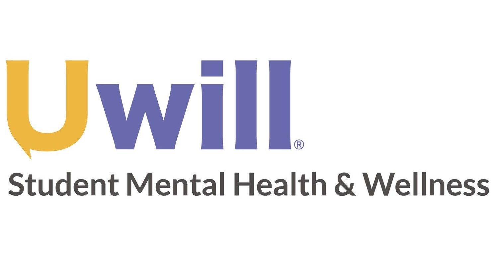

ABOUT US
CAPS is committed to creating an environment based on our values of multicultural, multi-disciplinary and multi-theoretical practices that allow our diverse student body to access care, receive high quality services and take positive pathways to mental health. We are happy to offer both in-person and virtual services.
FIND US
You can find us at our Front Desk in the Michigan Union 4th Floor. We are always ready to help support you throughout the day to assist you with your needs to answer questions, and get you to the right place.
We can be reached by phone at: (734) 764-8312.
Mental Health Support Options
Here at CAPS, we think your mental and emotional health is of utmost importance and we are here to support you in any way possible. In this section, you will be introduced to a wide variety of our services.
Individual Peer Counseling

Individual Peer Counseling(IPC) is a way for students to receive counseling from a fellow students at UMSI and serves as an alternative to receiving counseling from an adult, which may be more scary for some people. Our primary goal is to listen and support you, and provide resources where needed.
Students interested in receiving peer counseling can submit THIS FORM, or can be referred from a CAPS counselor to one of our Peer Counselors.
Let's Talk
“Let's Talk” is a free program that serves as a great entry way for students who are just getting started with mental health services. It provides casual meetings with counselors during specific drop-in times for initial support and advice.
The hours and location for Let's Talk can be found below:
Uwill Teletherapy Services

Uwill provides students with access to a therapist of their choice via the mode of their choice - video, phone, chat or messaging. Teletherapy services are available during the day, as well as evenings, weekends, and holidays. Uwill has licensed mental health professionals available in all 50 states and providers in many countries of the world. Uwill is perfect for students who would like a quick therapist session or students who are enrolled, but not currently on campus.
U of M students can have up to six sessions free of charge and can choose a therapist based on their preferences, which includes gender and race.
To utilize this service, make an account with your U of M email in this site.
Hours
Monday - Thursday: 8am - 6pm
Friday: 8am - 5pm
Saturday & Sunday: Closed
Urgent/Crisis Support at CAPS:
Monday - Friday from 10am - 4:30pm